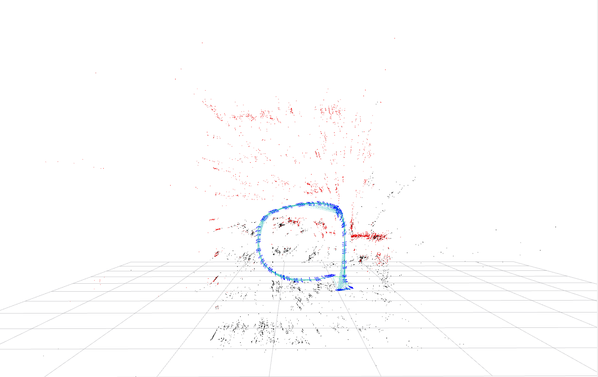

Bundle adjustment is the process of refining the 3D map points and poses created during ORB SLAM. Once bundle adjustment is finished we will have an accurate map of the environment we were tracking during ORB SLAM.
To do this bundle adjustment solves the reprojection error. Since 3D map points are calculated during the process of triangulation it can be incorrectly calculated due to issues with the camera or tracking. So in order to determine how inaccurate a 3D mappoint is, it is compared to a 2D coordinate of a map point. We can compare these two by reprojecting the 3D mappoint to 2D and comparing it to the 2D mappoint that we already had. The difference between the 2D mappoint and the reprojected 3D mappoint is the reprojection error.
Minimizing the reprojection error is what Bundle Adjustment tackles and it is formulated as a non linear optimization problem. The algorithm we use to minimize the reprojection error simultaneously adjusts both 3D map points and poses to find and optimal set that will minimize the reprojection error for all 3D map points.
Bundle Adjustment is a very computationally expensive so what ORB SLAM does it run two forms of bundle adjustment. One called local bundle adjustment which is used on a small set of 3D map points and camera poses and then global bundle adjustment which is run on all 3D map points and camera poses. This breaks the bundle adjustment problem into two seperate problems that are each easier to solve.

My solver for bundle adjustment is not as complex as other approaches to solving the reprojection error but it still is able to form a relativley accurate map.